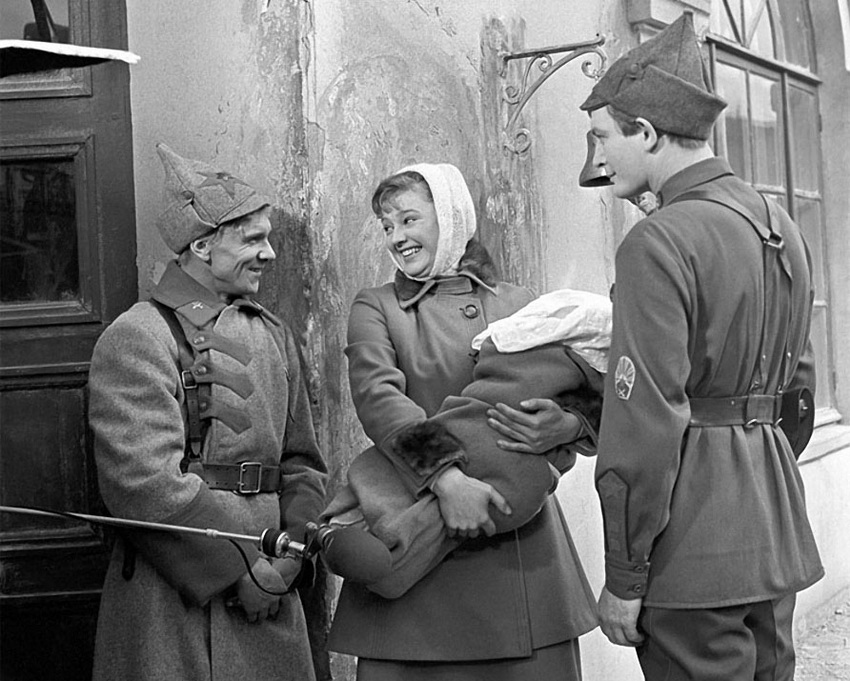

События фильма охватывают значительный период, начиная с Гражданской войны и заканчивая 60-ми годами. В 20-е годы молодой курсант Алексей Трофимов вместе со своей женой Любой отправляется в среднеазиатский гарнизон для прохождения службы. Здесь он знакомится с Иваном Вараввой. Судьба свяжет молодых людей вместе долгими годами дружбы. В Средней Азии Иван и Алексей участвуют в разгроме басмачей, после чего пути их расходятся: воинский долг раскидывает их по горячим точкам страны. Но их дороги снова пересекутся в Китае, где Иван Варавва находится на службе у китайского правительства в качестве военного советника.
Тем временем у Алексея Трофимова растёт сын Егор, мечтающий стать офицером. Самого Алексея отправляют на службу в Испанию, где он получает ранение в спину.
Проходят годы, наступает Великая Отечественная Война. И снова герои отправляются на фронт, чтобы защищать родину. Люба, жена Алексея, становится начальником передвижного госпиталя. На одной из остановок она встречается с возлюбленной Егора, Машей. Маша оставляет ей своего сына, так как сама отправляется на фронт и не может воспитывать ребёнка. В пути госпиталь подвергается атаке немцев. После боя Люба подписывает похоронки. Среди личных вещей сгоревшего танкиста она находит фотографию своего сына.
Война окончена. Алексей Трофимов получил заслуженное звание генерал-майора, под его началом находится танковая дивизия. Внук Алексея Иван пошёл по стопам своих отца и деда и поступил в Суворовское училище. Вскоре Алексея вызывают в штаб военного округа, где он неожиданно узнаёт в новом командующем своего старого боевого товарища Ивана Варавву. Иван предлагает другу оставить военную службу и начать преподавать военное дело в Москве. Алексей обещает подумать, но, посовещавшись с женой, отказывается от предложения.

Внук Трофимовых становится кадровым офицером ВДВ. Он продолжает традицию своей семьи, верно исполняет свой долг, за что получает поощрение и повышение в звании. В конце фильма зритель видит, как погибли родители Ивана – Маша и Егор.